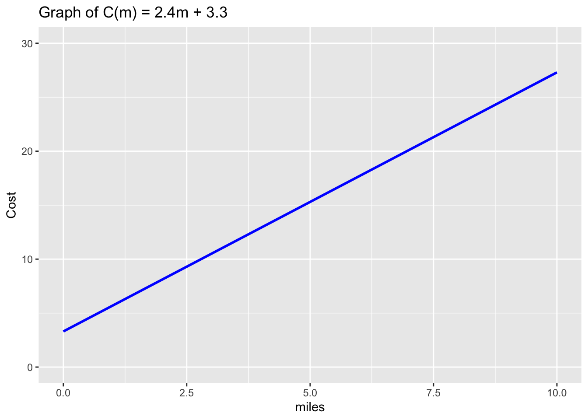
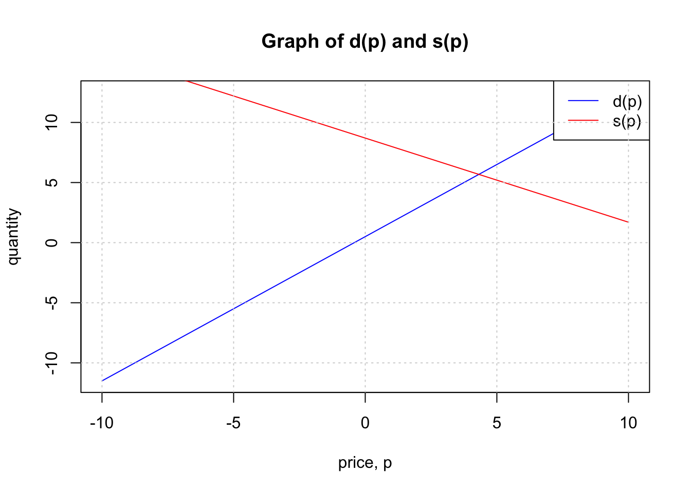
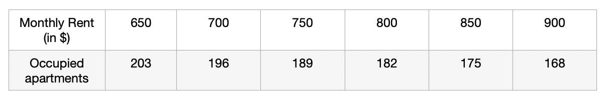

Linear Functions and Rates of Change
Definitions and Notation for Linear Functions
As you hop into a taxicab in Allentown, the meter will immediately read $3.30; this is the “drop” charge made when the taximeter is activated. After that initial fee, the taximeter will add $2.40 for each mile the taxi drives. In this scenario, the total taxi fare depends upon the number of miles ridden in the taxi, and we can ask whether it is possible to model this type of scenario with a function. Using descriptive variables, we choose \(m\) for miles and \(C\) for Cost in dollars as a function of miles: \(C(m)\).
Here, \(C(0)\) means the cost for travelling 0 miles (assuming you have entered the taxi). This cost is \(\$3.3\). We can write this mathematically as
C(0)=3.3Similarly, \(C(2)\) is the cost of travelling 2 miles and can be computed as
C(2) = 3.3 + (2.4 x 2) = 8.1Here, we take the base charge of \(\$3.3\) and add it to the charge for riding 2 miles to get a grand total of 8.1.
In general, if we travel \(m\) miles, we can compute the cost as
C(m)=3.3 + 2.4mIt is often useful to think carefully about the units of each component and how they relate. The expression below shows how this plays out in our taxi context:
\[C(m)=3.3 \hspace{.1in} dollars + 2.4 \hspace{.08in} \frac{dollars}{mile} \times m\hspace{.1in} miles\]
When dollars per mile are multiplied by a number of miles, the result is a number of dollars, matching the units on the 3.30, and matching the desired units for the C function. This means the units for the output, C(m), will be dollars.
We call a relationship such as this, a Function of \(m\). This function takes \(m\) (the miles traveled) as the Input and produces \(C(m)\) (the cost of travelling \(m\) miles) as the Output. As you will learn shortly, this is an example of a Linear Function. There are other types of functions (e.g., exponential, quadratic, etc.). In this course, the main focus is on linear functions. We will learn how to model real life situations and find their solutions by leveraging the ideas learned under linear functions.
There are two parts to the function, the first part (3.3) represents the FIXED charge while the VARIABLE part, \(2.4m\) which represents the charge for m miles. The cost of a ride, \(C(m)\) will vary as the number of miles, \(m\) varies. Furthermore, this cost varies by a factor of 2.4 which means that for every additional mile you ride, you will pay \(\$ 2.4\) more. We call the value \(2.4\) a Rate of Change for the function \(C(m)\). Since this rate of change stays the same over any interval, we say that the rate is Constant.
Function Representations
In the above section, we described the taxi cost function using words and represented it using a formula. Functions can also be represented using tables and graphs.
Consider the table below:
Have table here
We can also represent the function using a graph as shown below:
In the graph, we place the miles on the horizontal axis and the cost on the vertical axis axis. Since the cost is dependent on the miles traveled, we call it a Dependent Variable. Similarly, we call the miles, an Independent Variable.
If you ride 0 miles, the cost is $3.30, giving the point (0, 3.30) on the graph. We call this, the vertical or C(m)-intercept (or y-intercept in a general graph using x and y). In many applications, the y-intercept often means the initial value (e.g., cost) when the x value (in this case miles) is zero.
We call the above function, a Linear Function because its graph produces a straight line. In general, linear functions take the form \(f(x)=mx+b\) where \(m\) is the Slope (or rate of change) and \(b\) is the y-intercept. Note that \(b\) and/or \(m\) can take any values including zero.
By convention, we place the output values on the vertical (\(y\)) axis and so, \(y\) can be used in place of \(f(x)\). Hence, we can rewrite the above function as an equation: \[y=mx+b\]
Increasing and Decreasing Functions
Notice in the above example that as you increase the number of miles, the cost of the ride goes up. This is because the rate of change (m) is positive.
Since as you increase the input value, the output value increases, we say that the function \(C(m)\) is an increasing function. As can be seen on the graph, the line is rising from left to right. This is because the rate of change value is positive.
Generally, a linear function is said to be increasing if the slope \(m\) is positive and
decreasing if it is negative.
EXERCISE
1. Create a real-life scenario that can be modelled by a decreasing linear function
2. Write the formula for the function and graph it.
3. What would the graph of the function, f(x)= 0x+5 look like? Notice here m = 0. Calculating Rate of Change
The rate of change (ROC) is perhaps the most important component of any linear function. As we have seen, it can tell you whether the function is increasing or decreasing and can be used to create a linear model for a given real life situation. The question that arises is, “how can we compute the rate of change from given data?”. In the earlier taxi example, suppose, we did not know the rate of change but knew the cots of riding 4 miles and 7 miles. How can we use this information together with the fact that the function is linear to find the rate of change?
In the following examples we explore ways of finding the rate of change and how to use it to create the linear function/model for given real-life situations.
Example 1
The population of a city can be modeled using a linear function. In 2002, the population was 23,400 and in 2006, it was 27,800.
Find the rate of change of the population for this city.
Write down the formula of the linear function for the scenario.
Assuming the model (function) holds true until 2024, what would be the population of the town in 2024?
Solution
- Since we are told that the population grows linearly, we know that the growth between 2002 and 2003 is the same as the growth between 2003 and 2004, etc. Thus, to find the rate of change (i.e., population growth per year), we can divide the population change between 2002 and 2006 by the number of years as shown:
- If we use 2002 as the base year(i.e., t=0), then the constant value in the function is 23,400. Next, since we have the rate of change, all we need is to write the function in the form \(f(x)=mx+b\) where \(m\) is the rate of change and \(b\) is the constant or initial value, and t is time in years.
\[f(t) = 1100t+23,400\]
- For 2024, \(t=22\) years. Thus,
Example 2
The summit of Africa’s largest peak, Mt. Kilimanjaro, has two main ice fields and a glacier at its peak. Geologists measured the ice cover in the year 2000 (\(t = 0\)) to be approximately \(1951\hspace{.05in}m^2\); in the year 2007, the ice cover measured \(1555 \hspace{.05in}m^2\).
Suppose that the amount of ice cover at the peak of Mt. Kilimanjaro is changing at a constant average rate from year to year. Find a linear model, \(A=f(t)\) whose output is the area, A, in square meters in year \(t\) (where is the number of years after 2000).
What do the slope and \(A\)-intercept mean in the model you found in (a)? In particular, what are the units on the slope?
- Compute \(f(17)\). What does this quantity measure? Write a complete sentence to explain.
- If the model holds further into the future, when do we predict the ice cover will vanish?
Solution
- We begin by finding the rate of change. Since we know that the rate of change is constant year after year, we can divide the change between 2007 and 2000 by 7 to get the rate of change.
\[\begin{align} Rate\hspace{.04in} of\hspace{.04in} change &= \frac{Coverage \hspace{.04in} in \hspace{.04in} 2007 \hspace{.04in}- Coverage \hspace{.04in} in \hspace{.04in} 2000}{2007-2000}\\ &= - 56.57\hspace{.04in} m^2\hspace{.04in} per \hspace{.04in} year \end{align}\]
The general format of a linear function is \(A(t)=mt+b\) where \(m\) is the rate of change and \(b\) is the \(A(t)\)-intercept (or the value of \(A(0)\) which we know is 1951).
Thus, the function is,
\[A(t)=-56.57t + 1951\]
The slope means that the ice for every additional year, the ice coverage decreases by \(56.57 m^2\). The units are square meters per year (\(m^2/year\)).
The y intercept means that the initial coverage at year zero (when the measurement was first taken) is \(1951 m^2\).\(f(17)=(-55.57\times17)+1951=1006.31\); This means that there were \(1006.31 mi^2\) of ice coverage on Mt. Kilimanjaro by 2017 (i.e., 17 years after 2000).
Remember that \(A(t)\) is the function that gives the ice cover after to years. Therefore, if the ice cover is zero, it means \(A(t)=0\). We compute \(t\) by solving the equation \(-56.57t + 1951=0\) for t.
A Formula For ROC
From the foregoing examples, it should be readily clear that, on any interval \((x_1,x_2)\) where \(x_1\neq x_2\),
\[\begin{align} Rate \hspace{0.04in}of\hspace{0.04in} Change &=\frac{Change\hspace{0.04in}in\hspace{0.04in}Output}{Change \hspace{0.04in} in\hspace{0.04in}Input}\\ &=\frac{f(x_2)-f(x_1)}{x_2 - x_1} \end{align}\]Example 3
If \(f(x)\) is a linear function, \(f(3)=−2\), and \(f(8)=1\), find an equation/formula for the function.
Solution
In this problem, we are looking at the input interval between 3 and 8. Thus, \(x_1=3\) and \(x_2=8\). To find the ROC for \(f(x)\) we proceed as follows:
\[\begin{align} ROC &= \frac{f(x_2)-f(x_1)}{x_2 - x_1}\\ &= \frac{f(3)-f(1)}{8 - 3}\\ &= \frac{1-(-2)}{5}\\ &=\frac{3}{5} \end{align}\] Next, the general form of the linear function is \(f(x)=mx+b\), where \(m\) is the ROC (aka slope. So, we can write, \(f(x)=\frac{3}{5}x+b\). To find \(b\), we can use one of the known values of \(f(x)\), such as \(f(8)\) and solve for \(b\) as follows:
\[\begin{align} f(8)&=\frac{3}{5}\times (8)+b\\ 1&=\frac{24}{5}+b\\ b&=1-\frac{24}{5}\\ &=-\frac{19}{5} \end{align}\]So, the equation becomes,
\[f(x)=\frac{3}{5}x-\frac{19}{5}\]
Point-Slope Equation Format
The equation \(y=mx+b\) is called the slope-intercept form of a linear function (equation). In cases where you only know one of the points, say \((x_1,y_1)\) and the slope \(m\) you can express the equation of the line as follows:
\[y-y_1=m(x-x_1)\] Where, \((x_1,y_1)\) is the KNOWN point.
After this, you can then rearrange the equation into the slope-intercept format. You just need to be careful with your algebraic manipulation when doing this. See example below:
Example 4
A new house was sold for $296000 8 years after it was purchased. The original owners calculated that the house appreciated $2,500 per year while they owned it. Find a linear function that describes the above situation if \(x\) is the number of years since the building was purchased.
Solution
Let \(x\) be the number of years and \(C(x)\) be the cost of the house after \(x\) years.
Note that, we do not know the initial price (i.e., \(b\)) but we know the \(ROC\) in cost to be 2,500 $ per year (i.e., a linear function). We also know the cost after 8 years (i.e, we know one point \((8, 296,000)\)).
We can use this information and the concept of slope-point format to write the equation of the line as follows:
\[\begin{align} y-y_1&=m(x-x_1)\\ y-296,000&=2500(x-8)\\ y-296,000&=2500x-20,000\\ y&=2500x-20000+296,000\\ y&=2500x+276,000 \end{align}\]Note that in the above equation, \(y=C(x)\). So we are done. As a bonus, we know the cost of the house was $276,000 eight years ago.
Intersecting Lines
As you saw earlier, we can represent linear functions using graphs. By examining graphs of linear functions, we are able to tell whether the function is increasing (positive slope), decreasing (negative slope) or neither (zero slope).
What would happen if you graph two lines with the same slope but different vertical (y) intercepts? What would the lines look like?
Here is a claim: If two linear functions have different slopes, then, their lines must intersect at some point. Do you think this claim is true? Why or why not?
Supply and demand problems are sometimes modeled using linear functions. When the demand and supply meet (intersect) we have an equilibrium point. Consider the following example:
Example 5
The supply, in thousands of items, for custom phone cases can be modeled by the equation, \(s(p)=0.5+1.2p\) while the demand can be modeled by \(d(p)=8.7−0.7p\), where p is in the price in dollars. Find the equilibrium price and quantity, the intersection of the supply and demand curves.
Solution
There are two ways to solve this problem. First, you can set up \(s(p)=d(p)\) then solve algebraically for \(p\) or simply graph the two functions then look at the point of intersection.
Let us do both.
Algebraic solution :
\[\begin{align} 0.5+1.2p&=8.7−0.7p\\ 1.2p+0.7p&=8.7-0.5\\ 1.9p&=8.2\\ p&=\frac{8.2}{1.9}\\ &=4.32 \end{align}\]Thus, the equilibrium price is approximately $4.32.
To find the quantity, use any of the two functions to evaluate the output at \(p=4.32\). Note that the answers will be the same same the two functions intersect when \(p=4.32\).
\[\begin{align} s(4.32)&=0.5+(1.2\times 4.32)\\ &= 5.68 \end{align}\]Graphical solution :
For the graphical solution, you simply graph the two functions and read out the cordinates of the intersection point.

The approximate point of intersection for the graphs is \((4.3,5.6)\). You can get more accurate values using technology. This intersection is a pair \((x,y)\) where the first number is the price (input) and the second if the quantity (output). Thus, the equilibrium price is $4.3 and the quantity is 5.6 units. This answer is the same as the one using the algebraic approach.
Exercises
A report by the US Geological Survey indicates that glaciers in Glacier National Park, Montana, are shrinking. Recent estimates indicate the area covered by glaciers has decreased from over \(25.5 \hspace{.04in} km^2\) in \(1850\) to about \(16.5\hspace{.04in}km^2\) in \(1995\). Let \(A=f(t)\) give the area (in square km) \(t\) years after 2000, and assume \(f(t)=16.2-0.062t\).
- Find and explain the meaning of the slope.
- Find and explain the meaning of the A-intercept.
- What does \(f(17)\) mean? Write in full sentence and include units.
- Solve \(f(t)=9\) for \(t\) and explain what it means in context. Include units in your explanation.
- Find and explain the meaning of the slope.
A town has a population of \(2000\) people at time \(t=0\). In each of the following cases, write a formula for the population \(P\),of the town as a function of year \(t\).
- The population increases by 90 people per year.
- The population increases by 1 percent per year.
- The population increases by 90 people per year.
Marcus currently owns 200 songs in his iTunes collection. Every month, he adds 15 new songs. Write a formula for the number of songs, \(N\), in his iTunes collection as a function of the number of months, \(m\). How many songs will he own in a year?
Working as an insurance salesperson, Ilya earns a base salary and a commission on each new policy, so Ilya’s weekly income, \(I\), depends on the number of new policies, \(n\), he sells during the week. Last week he sold 3 new policies, and earned $760 for the week. The week before, he sold 5 new policies, and earned $920. Find an equation for \(I(n)\), and interpret the meaning of the components of the equation.
Find the slope of the line connecting the points \((2,7)\) and \((6,11)\).
Find the equation of the line in number 4 above.
Find a formula for the linear equation graphed below. You can enlarge the graph by clicking on it.
An apartment manager keeps careful record of how the rent charged per unit corresponds to the number of occupied units in a large complex. The collected data is shown in the table below:
Table Here - Why is it reasonable to say that the number of occupied apartments is a linear function of rent?
- Let \(A\) be the number of occupied apartments and \(R\) the monthly rent charged (in dollars). If we let \(A=f(R)\) ,what is the slope of the linear function \(f(R)\)? What is the meaning of the slope in the context of this question?
- Determine a formula for \(A=f(R)\).
- If the rent were to be increased to $1000, how many occupied apartments should the apartment manager expect? How much total revenue would the manager collect in a given month when rent is set at $1000?
- Why is it reasonable to say that the number of occupied apartments is a linear function of rent?